R: rendered, the task block below · C: replayed on the CPU only · sentences: the primitive sentences after the procedures are expanded · accepted: sentences the session planned · sub-goals: scene-graph conditions satisfied
One block per task: the action sentences it was given (each one a family with grounded arguments, with what the executor made of it; ◆ marks a sentence that satisfied a sub-goal), its sub-goals as conditions over the scene graph with the command that satisfied each (✓ / ✗, click to jump the videos there; open “conditions over the scene graph” for the exact atoms), the three camera videos of its recorded run (external, first-person, effect close-up), the phases, the step timeline and the key contacts measured in MuJoCo. Click a timeline bar or a keyframe to jump the videos there.
coffee_espresso_double · external camera · 108.7 scoffee_espresso_double · first-person camera · 108.7 scoffee_espresso_double · effect close-up camera · 108.7 s
stand stillmove the portafilter → on the scalepress TAREmove the portafilter → in the grinder cradlewait · fx grindwait · fx grindmove the portafilter → on the countermove the portafilter → on the scalestand stillmove the portafilter → on the counteruse_tool the wdt tooluse_tool the tampermove the portafilter → in the group headmove the glass cup → under the group headpress 2 CUPwait · fx brew, gauge needle, displaywait · fx brew, gauge needle, displaywait · fx brew, gauge needle, displaywait · fx brew, gauge needle, displaywait · fx brew, gauge needle, displaywait · fx brew, gauge needle, displaymove the glass cup → on the counter
stand still / waitlook atreachalign onpressreleasehand backopen (pull)close (push)turnmovecontact-tested pressassisted graspdevice motor (turntable)effect (light, display)◆ key activated · ▲ ▼ finger contact starts / ends (measured in MuJoCo)
lanes · gaze: where the head looks · left / right hand: that hand's steps · body: standing still · device: its own motion and the measured key contacts
0.4 s · stand still2.7 s · move the portafilter → on the scale
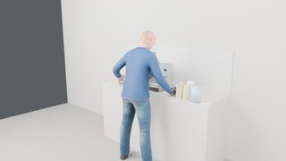
6.6 s · press TARE
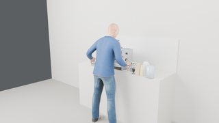
11.0 s · move the portafilter → in the grinder cradle16.8 s · wait · fx grind21.4 s · wait · fx grind26.2 s · move the portafilter → on the counter32.2 s · move the portafilter → on the scale36.1 s · stand still39.2 s · move the portafilter → on the counter45.8 s · use_tool the wdt tool53.7 s · use_tool the tamper60.5 s · move the portafilter → in the group head65.9 s · move the glass cup → under the group head69.8 s · press 2 CUP73.9 s · wait · fx brew, gauge needle, display78.9 s · wait · fx brew, gauge needle, display83.9 s · wait · fx brew, gauge needle, display88.9 s · wait · fx brew, gauge needle, display93.9 s · wait · fx brew, gauge needle, display98.9 s · wait · fx brew, gauge needle, display
grasp rim, lift_m 0.14, place prop_home.dosing_cup
distance_to_place_m 0.0
succeeded
distribute the grounds with the WDT tool
distribute
turns 3
succeeded
tamp the grounds with 15 kg◆
tamp
kpa 15.0, puck_g_level 13.091
succeeded
lock the portafilter into the group head
lock
succeeded
move the glass cup under the group head
move
glass_cup
grasp side, lift_m 0.14, place cup_place
distance_to_place_m 0.0
succeeded
pull a double shot◆
brew
key 2 CUP, target_ml 60.0, ml 60.0, elapsed_s 33.72, verdict in range, into ['glass_cup']
succeeded
move the glass cup back where it was
move
glass_cup
grasp side, lift_m 0.14, place prop_home.glass_cup
distance_to_place_m 0.0
From beans to cup: fill the hopper, dial in 16 g at size 7 through the dosing cup, pull a double shot
✓ hopper holds 180 g of beans #1 · 24.5 s✓ 16 g of grounds in the dosing cup #4 · 48.6 s✓ 16 g in the portafilter, distributed, tamped #9 · 83.5 s✓ 60 mL espresso in the glass cup #12 · 132.3 s
coffee_bean_to_cup · external camera · 139.2 scoffee_bean_to_cup · first-person camera · 139.2 scoffee_bean_to_cup · effect close-up camera · 139.2 s
stand stillmove the hopper lid → on the top deckpour the bean bagmove the hopper lid → in its place on the machineturn grind size dialturn grind amount dialmove the dosing cup → in the grinder cradlewait · fx grindwait · fx grindmove the dosing cup → on the countermove the dosing cup → on the scalepour the dosing cupmove the dosing cup → on the counteruse_tool the wdt tooluse_tool the tampermove the portafilter → in the group headmove the glass cup → under the group headpress 2 CUPwait · fx brew, gauge needle, displaywait · fx brew, gauge needle, displaywait · fx brew, gauge needle, displaywait · fx brew, gauge needle, displaywait · fx brew, gauge needle, displaywait · fx brew, gauge needle, displaywait · fx brew, gauge needle, displaymove the glass cup → on the counter
stand still / waitlook atreachalign onpressreleasehand backopen (pull)close (push)turnmovecontact-tested pressassisted graspdevice motor (turntable)effect (light, display)◆ key activated · ▲ ▼ finger contact starts / ends (measured in MuJoCo)
lanes · gaze: where the head looks · left / right hand: that hand's steps · body: standing still · device: its own motion and the measured key contacts
0.4 s · stand still3.2 s · move the hopper lid → on the top deck12.1 s · pour the bean bag
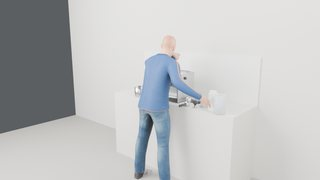
22.0 s · move the hopper lid → in its place on the machine25.3 s · turn grind size dial28.0 s · turn grind amount dial
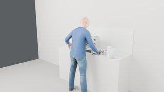
32.4 s · move the dosing cup → in the grinder cradle38.0 s · wait · fx grind42.2 s · wait · fx grind46.4 s · move the dosing cup → on the counter
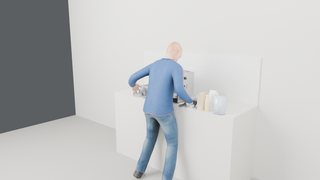
52.2 s · move the dosing cup → on the scale
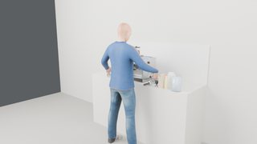
58.8 s · pour the dosing cup
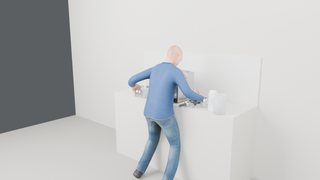
66.1 s · move the dosing cup → on the counter
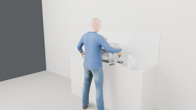
72.5 s · use_tool the wdt tool80.4 s · use_tool the tamper87.3 s · move the portafilter → in the group head92.6 s · move the glass cup → under the group head96.6 s · press 2 CUP100.6 s · wait · fx brew, gauge needle, display105.6 s · wait · fx brew, gauge needle, display110.6 s · wait · fx brew, gauge needle, display115.6 s · wait · fx brew, gauge needle, display120.6 s · wait · fx brew, gauge needle, display125.6 s · wait · fx brew, gauge needle, display130.1 s · wait · fx brew, gauge needle, display135.1 s · move the glass cup → on the counter
coffee_ristretto · external camera · 71.9 scoffee_ristretto · first-person camera · 71.9 scoffee_ristretto · effect close-up camera · 71.9 s
stand stillmove the portafilter → in the grinder cradlewait · fx grindwait · fx grindmove the portafilter → on the counteruse_tool the wdt tooluse_tool the tampermove the portafilter → in the group headmove the glass cup → under the group headpress 1 CUPwait · fx brew, gauge needle, displaywait · fx brew, gauge needle, displaywait · fx brew, gauge needle, displaymove the glass cup → on the counter
stand still / waitlook atreachalign onpressreleasehand backopen (pull)close (push)turnmovecontact-tested pressassisted graspdevice motor (turntable)effect (light, display)◆ key activated · ▲ ▼ finger contact starts / ends (measured in MuJoCo)
lanes · gaze: where the head looks · left / right hand: that hand's steps · body: standing still · device: its own motion and the measured key contacts
0.4 s · stand still3.5 s · move the portafilter → in the grinder cradle9.2 s · wait · fx grind13.8 s · wait · fx grind18.7 s · move the portafilter → on the counter25.6 s · use_tool the wdt tool33.5 s · use_tool the tamper40.3 s · move the portafilter → in the group head45.7 s · move the glass cup → under the group head49.7 s · press 1 CUP53.7 s · wait · fx brew, gauge needle, display58.7 s · wait · fx brew, gauge needle, display63.0 s · wait · fx brew, gauge needle, display67.7 s · move the glass cup → on the counter
coffee_americano · external camera · 112.5 scoffee_americano · first-person camera · 112.5 scoffee_americano · effect close-up camera · 112.5 s
stand stillmove the portafilter → in the grinder cradlewait · fx grindwait · fx grindmove the portafilter → on the counteruse_tool the wdt tooluse_tool the tampermove the portafilter → in the group headmove the glass cup → under the group headpress 2 CUPwait · fx brew, gauge needle, displaywait · fx brew, gauge needle, displaywait · fx brew, gauge needle, displaywait · fx brew, gauge needle, displaywait · fx brew, gauge needle, displaywait · fx brew, gauge needle, displaymove the glass cup → under the hot water outletturn steam dialwait · fx hot water, displaywait · fx hot water, displayturn steam dialmove the glass cup → on the counter
stand still / waitlook atreachalign onpressreleasehand backopen (pull)close (push)turnmovecontact-tested pressassisted graspdevice motor (turntable)effect (light, display)◆ key activated · ▲ ▼ finger contact starts / ends (measured in MuJoCo)
lanes · gaze: where the head looks · left / right hand: that hand's steps · body: standing still · device: its own motion and the measured key contacts
0.4 s · stand still3.5 s · move the portafilter → in the grinder cradle9.2 s · wait · fx grind13.8 s · wait · fx grind18.7 s · move the portafilter → on the counter25.6 s · use_tool the wdt tool33.5 s · use_tool the tamper40.3 s · move the portafilter → in the group head45.7 s · move the glass cup → under the group head49.7 s · press 2 CUP53.7 s · wait · fx brew, gauge needle, display58.7 s · wait · fx brew, gauge needle, display63.7 s · wait · fx brew, gauge needle, display
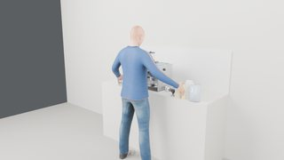
68.7 s · wait · fx brew, gauge needle, display73.7 s · wait · fx brew, gauge needle, display78.7 s · wait · fx brew, gauge needle, display83.8 s · move the glass cup → under the hot water outlet89.2 s · turn steam dial94.5 s · wait · fx hot water, display98.7 s · wait · fx hot water, display102.6 s · turn steam dial108.5 s · move the glass cup → on the counter
coffee_iced_americano · external camera · 125.8 scoffee_iced_americano · first-person camera · 125.8 scoffee_iced_americano · effect close-up camera · 125.8 s
stand stillmove the glass → on the top deckpour the scoopmove the portafilter → in the grinder cradlewait · fx grindwait · fx grindmove the portafilter → on the counteruse_tool the wdt tooluse_tool the tampermove the portafilter → in the group headmove the glass cup → under the group headpress 2 CUPwait · fx brew, gauge needle, displaywait · fx brew, gauge needle, displaywait · fx brew, gauge needle, displaywait · fx brew, gauge needle, displaywait · fx brew, gauge needle, displaywait · fx brew, gauge needle, displaypour the glass cuppour the water pitchermove the glass → on the counter
stand still / waitlook atreachalign onpressreleasehand backopen (pull)close (push)turnmovecontact-tested pressassisted graspdevice motor (turntable)effect (light, display)◆ key activated · ▲ ▼ finger contact starts / ends (measured in MuJoCo)
lanes · gaze: where the head looks · left / right hand: that hand's steps · body: standing still · device: its own motion and the measured key contacts
0.4 s · stand still3.7 s · move the glass → on the top deck12.3 s · pour the scoop
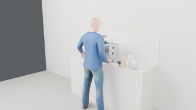
21.8 s · move the portafilter → in the grinder cradle27.5 s · wait · fx grind32.1 s · wait · fx grind36.9 s · move the portafilter → on the counter43.9 s · use_tool the wdt tool51.8 s · use_tool the tamper58.6 s · move the portafilter → in the group head64.0 s · move the glass cup → under the group head68.0 s · press 2 CUP72.0 s · wait · fx brew, gauge needle, display77.0 s · wait · fx brew, gauge needle, display82.0 s · wait · fx brew, gauge needle, display
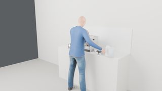
87.0 s · wait · fx brew, gauge needle, display92.0 s · wait · fx brew, gauge needle, display97.0 s · wait · fx brew, gauge needle, display
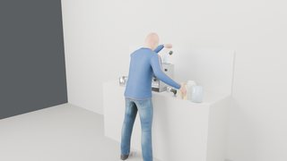
103.4 s · pour the glass cup112.4 s · pour the water pitcher121.1 s · move the glass → on the counter
pour 150 mL of milk from the milk carton into the jug◆
pour
milk_carton
substance milk, asked 150.0, unit mL, moved 150.0
succeeded
grind into the portafilter
grind
portafilter
grams 18.0, ground_g 18.0
succeeded
distribute the grounds
distribute
turns 3
succeeded
tamp the grounds firmly
tamp
kpa 15.0, puck_g_level 14.727
succeeded
lock the portafilter into the group head
lock
succeeded
move the glass cup under the group head
move
glass_cup
grasp side, lift_m 0.14, place cup_place
distance_to_place_m 0.0
succeeded
pull a double shot
brew
key 2 CUP, target_ml 60.0, ml 60.0, elapsed_s 30.0, verdict in range, into ['glass_cup']
succeeded
steam the milk until velvety◆
steam
seconds 8.0, foam_ml 80.0, milk_temp_c 44.0
succeeded
purge the steam wand
purge_wand
duration_s 2.0, ml 20.0
succeeded
wipe the steam wand with the cloth◆
wipe
target steam_wand, anchor wand_wipe, strokes 3
succeeded
swirl the jug
swirl
succeeded
tap the jug on the counter
tap
succeeded
pour 120 mL of milk slowly into the glass cup◆
pour_milk
glass_cup
substance milk, asked 120.0, unit mL, moved 120.0, rosetta True
succeeded
move the glass cup back where it was
move
glass_cup
grasp side, lift_m 0.14, place prop_home.glass_cup
distance_to_place_m 0.0
Make a latte in the glass cup: velvety milk poured on a double shot
✓ 150 mL of milk in the jug #1 · 9.8 s✓ milk steamed until velvety (80 to 100 mL of foam: not thick foam) #8 · 123.2 s✓ steam wand clean again #10 · 146.7 s✓ 120 mL of milk on 60 mL of espresso, a rosetta #13 · 173.4 s
coffee_latte · external camera · 181.7 scoffee_latte · first-person camera · 181.7 scoffee_latte · effect close-up camera · 181.7 s
stand stillpour the milk cartonmove the portafilter → in the grinder cradlewait · fx grindwait · fx grindmove the portafilter → on the counteruse_tool the wdt tooluse_tool the tampermove the portafilter → in the group headmove the glass cup → under the group headpress 2 CUPwait · fx brew, gauge needle, displaywait · fx brew, gauge needle, displaywait · fx brew, gauge needle, displaywait · fx brew, gauge needle, displaywait · fx brew, gauge needle, displaywait · fx brew, gauge needle, displayopen the steam wandmove the jug → under the steam wandturn steam dialwait · fx steam, displaywait · fx steam, displayturn steam dialmove the jug → beside the machineturn steam dialwait · fx steam, displayturn steam dialclose the steam wanduse_tool the clothpour the jugmove the glass cup → on the counter
stand still / waitlook atreachalign onpressreleasehand backopen (pull)close (push)turnmovecontact-tested pressassisted graspdevice motor (turntable)effect (light, display)◆ key activated · ▲ ▼ finger contact starts / ends (measured in MuJoCo)
lanes · gaze: where the head looks · left / right hand: that hand's steps · body: standing still · device: its own motion and the measured key contacts
0.4 s · stand still5.1 s · pour the milk carton13.7 s · move the portafilter → in the grinder cradle19.4 s · wait · fx grind24.0 s · wait · fx grind28.9 s · move the portafilter → on the counter
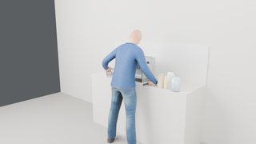
35.8 s · use_tool the wdt tool43.7 s · use_tool the tamper50.5 s · move the portafilter → in the group head55.9 s · move the glass cup → under the group head59.9 s · press 2 CUP63.9 s · wait · fx brew, gauge needle, display68.9 s · wait · fx brew, gauge needle, display73.9 s · wait · fx brew, gauge needle, display78.9 s · wait · fx brew, gauge needle, display83.9 s · wait · fx brew, gauge needle, display88.9 s · wait · fx brew, gauge needle, display94.3 s · open the steam wand99.5 s · move the jug → under the steam wand103.5 s · turn steam dial107.8 s · wait · fx steam, display112.0 s · wait · fx steam, display116.0 s · turn steam dial120.8 s · move the jug → beside the machine124.7 s · turn steam dial127.8 s · wait · fx steam, display131.1 s · turn steam dial136.7 s · close the steam wand148.6 s · use_tool the cloth166.6 s · pour the jug177.5 s · move the glass cup → on the counter
coffee_cappuccino · external camera · 186.2 scoffee_cappuccino · first-person camera · 186.2 scoffee_cappuccino · effect close-up camera · 186.2 s
stand stillpour the milk cartonmove the portafilter → in the grinder cradlewait · fx grindwait · fx grindmove the portafilter → on the counteruse_tool the wdt tooluse_tool the tampermove the portafilter → in the group headmove the glass cup → under the group headpress 2 CUPwait · fx brew, gauge needle, displaywait · fx brew, gauge needle, displaywait · fx brew, gauge needle, displaywait · fx brew, gauge needle, displaywait · fx brew, gauge needle, displaywait · fx brew, gauge needle, displayopen the steam wandmove the jug → under the steam wandturn steam dialwait · fx steam, displaywait · fx steam, displaywait · fx steam, displayturn steam dialmove the jug → beside the machineturn steam dialwait · fx steam, displayturn steam dialclose the steam wanduse_tool the clothpour the jugmove the glass cup → on the counter
stand still / waitlook atreachalign onpressreleasehand backopen (pull)close (push)turnmovecontact-tested pressassisted graspdevice motor (turntable)effect (light, display)◆ key activated · ▲ ▼ finger contact starts / ends (measured in MuJoCo)
lanes · gaze: where the head looks · left / right hand: that hand's steps · body: standing still · device: its own motion and the measured key contacts
0.4 s · stand still4.9 s · pour the milk carton13.2 s · move the portafilter → in the grinder cradle18.9 s · wait · fx grind23.5 s · wait · fx grind28.4 s · move the portafilter → on the counter35.3 s · use_tool the wdt tool43.2 s · use_tool the tamper50.0 s · move the portafilter → in the group head55.4 s · move the glass cup → under the group head59.4 s · press 2 CUP63.4 s · wait · fx brew, gauge needle, display68.4 s · wait · fx brew, gauge needle, display73.4 s · wait · fx brew, gauge needle, display78.4 s · wait · fx brew, gauge needle, display83.4 s · wait · fx brew, gauge needle, display88.4 s · wait · fx brew, gauge needle, display93.8 s · open the steam wand
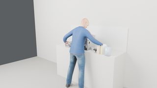
99.0 s · move the jug → under the steam wand103.0 s · turn steam dial
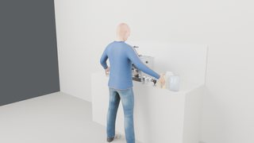
107.3 s · wait · fx steam, display112.3 s · wait · fx steam, display116.9 s · wait · fx steam, display121.5 s · turn steam dial126.3 s · move the jug → beside the machine130.2 s · turn steam dial133.3 s · wait · fx steam, display136.6 s · turn steam dial142.2 s · close the steam wand154.1 s · use_tool the cloth171.7 s · pour the jug182.0 s · move the glass cup → on the counter
coffee_flat_white · external camera · 171.2 scoffee_flat_white · first-person camera · 171.2 scoffee_flat_white · effect close-up camera · 171.2 s
stand stillpour the milk cartonmove the portafilter → in the grinder cradlewait · fx grindwait · fx grindmove the portafilter → on the counteruse_tool the wdt tooluse_tool the tampermove the portafilter → in the group headmove the glass cup → under the group headpress 2 CUPwait · fx brew, gauge needle, displaywait · fx brew, gauge needle, displaywait · fx brew, gauge needle, displaywait · fx brew, gauge needle, displaywait · fx brew, gauge needle, displaywait · fx brew, gauge needle, displayopen the steam wandmove the jug → under the steam wandturn steam dialwait · fx steam, displaywait · fx steam, displayturn steam dialmove the jug → beside the machineturn steam dialwait · fx steam, displayturn steam dialclose the steam wanduse_tool the clothpour the jugmove the glass cup → on the counter
stand still / waitlook atreachalign onpressreleasehand backopen (pull)close (push)turnmovecontact-tested pressassisted graspdevice motor (turntable)effect (light, display)◆ key activated · ▲ ▼ finger contact starts / ends (measured in MuJoCo)
lanes · gaze: where the head looks · left / right hand: that hand's steps · body: standing still · device: its own motion and the measured key contacts
0.4 s · stand still4.7 s · pour the milk carton12.8 s · move the portafilter → in the grinder cradle18.6 s · wait · fx grind23.2 s · wait · fx grind28.0 s · move the portafilter → on the counter35.0 s · use_tool the wdt tool42.8 s · use_tool the tamper49.7 s · move the portafilter → in the group head
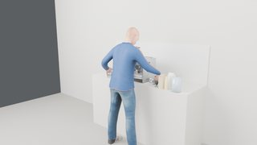
55.0 s · move the glass cup → under the group head59.0 s · press 2 CUP63.0 s · wait · fx brew, gauge needle, display68.0 s · wait · fx brew, gauge needle, display73.0 s · wait · fx brew, gauge needle, display78.0 s · wait · fx brew, gauge needle, display83.0 s · wait · fx brew, gauge needle, display88.0 s · wait · fx brew, gauge needle, display93.4 s · open the steam wand98.7 s · move the jug → under the steam wand102.7 s · turn steam dial107.0 s · wait · fx steam, display110.4 s · wait · fx steam, display113.1 s · turn steam dial118.0 s · move the jug → beside the machine121.9 s · turn steam dial124.9 s · wait · fx steam, display128.3 s · turn steam dial133.9 s · close the steam wand143.5 s · use_tool the cloth157.3 s · pour the jug
coffee_backflush · external camera · 146.6 scoffee_backflush · first-person camera · 146.6 scoffee_backflush · effect close-up camera · 146.6 s
stand stillmove the cleaning disc → on the portafiltermove the portafilter → in the group headpress 1 CUPwait · gauge needle, displaywait · gauge needle, displaypress 1 CUPwait · gauge needle, displaywait · gauge needle, displaypress 1 CUPwait · gauge needle, displaywait · gauge needle, displaypress 1 CUPwait · gauge needle, displaywait · gauge needle, displaypress 1 CUPwait · gauge needle, displaywait · gauge needle, displaymove the portafilter → on the countermove the cleaning disc → in its place on the machine
stand still / waitlook atreachalign onpressreleasehand backopen (pull)close (push)turnmovecontact-tested pressassisted graspdevice motor (turntable)effect (light, display)◆ key activated · ▲ ▼ finger contact starts / ends (measured in MuJoCo)
lanes · gaze: where the head looks · left / right hand: that hand's steps · body: standing still · device: its own motion and the measured key contacts
0.4 s · stand still
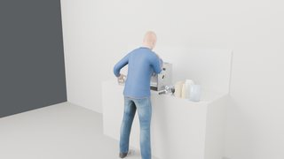
3.6 s · move the cleaning disc → on the portafilter9.3 s · move the portafilter → in the group head17.3 s · press 1 CUP27.1 s · wait · gauge needle, display32.1 s · wait · gauge needle, display40.9 s · press 1 CUP51.6 s · wait · gauge needle, display56.6 s · wait · gauge needle, display65.4 s · press 1 CUP76.1 s · wait · gauge needle, display81.1 s · wait · gauge needle, display89.9 s · press 1 CUP100.6 s · wait · gauge needle, display105.6 s · wait · gauge needle, display114.4 s · press 1 CUP125.1 s · wait · gauge needle, display130.1 s · wait · gauge needle, display135.5 s · move the portafilter → on the counter
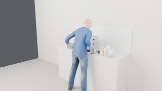
142.1 s · move the cleaning disc → in its place on the machine
coffee_descale · external camera · 56.5 scoffee_descale · first-person camera · 56.5 scoffee_descale · effect close-up camera · 56.5 s
stand stillopen the water tankpour the descalerclose the water tankpress 2 CUPwait · fx brew, gauge needle, displaywait · fx brew, gauge needle, displaywait · fx brew, gauge needle, displaywait · fx brew, gauge needle, displaywait · fx brew, gauge needle, display
stand still / waitlook atreachalign onpressreleasehand backopen (pull)close (push)turnmovecontact-tested pressassisted graspdevice motor (turntable)effect (light, display)◆ key activated · ▲ ▼ finger contact starts / ends (measured in MuJoCo)
lanes · gaze: where the head looks · left / right hand: that hand's steps · body: standing still · device: its own motion and the measured key contacts
0.4 s · stand still3.7 s · open the water tank11.5 s · pour the descaler19.2 s · close the water tank
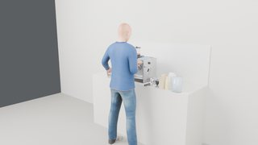
25.7 s · press 2 CUP32.5 s · wait · fx brew, gauge needle, display37.5 s · wait · fx brew, gauge needle, display42.5 s · wait · fx brew, gauge needle, display47.5 s · wait · fx brew, gauge needle, display52.9 s · wait · fx brew, gauge needle, display
coffee_clean_grinder · external camera · 80.0 scoffee_clean_grinder · first-person camera · 80.0 scoffee_clean_grinder · effect close-up camera · 80.0 s
stand stillmove the hopper lid → on the top deckmove the hopper → on the scalepour the hoppermove the hopper → in its place on the machinemove the hopper lid → in its place on the machinemove the hopper lid → on the top deckmove the hopper → on the scalemove the burr → under the group headuse_tool the grinder brushmove the burr → in its place on the machinemove the hopper → in its place on the machinemove the hopper lid → in its place on the machine
stand still / waitlook atreachalign onpressreleasehand backopen (pull)close (push)turnmovecontact-tested pressassisted graspdevice motor (turntable)effect (light, display)◆ key activated · ▲ ▼ finger contact starts / ends (measured in MuJoCo)
lanes · gaze: where the head looks · left / right hand: that hand's steps · body: standing still · device: its own motion and the measured key contacts
0.4 s · stand still3.2 s · move the hopper lid → on the top deck9.1 s · move the hopper → on the scale
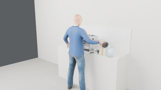
17.3 s · pour the hopper
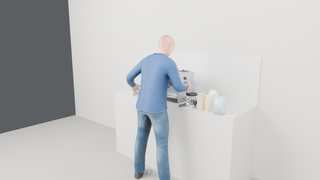
26.2 s · move the hopper → in its place on the machine32.3 s · move the hopper lid → in its place on the machine37.9 s · move the hopper lid → on the top deck
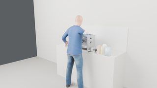
43.8 s · move the hopper → on the scale49.9 s · move the burr → under the group head
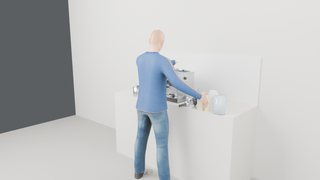
56.5 s · use_tool the grinder brush63.5 s · move the burr → in its place on the machine69.5 s · move the hopper → in its place on the machine76.0 s · move the hopper lid → in its place on the machine
Close down for the day: clean the portafilter and wand, empty, refill, wipe, switch off
starts with: steam wand dirty; portafilter dirty; portafilter in the group head with 18 g of grounds, locked in, a spent puck; drip tray 300 mL of water; knock box 2 spent pucks; water tank 500 mL of water
✓ spent puck out of the portafilter #2 · 22.9 s✓ steam wand clean #6 · 62.5 s✓ drip tray empty #7 · 77.7 s✓ knock box empty #8 · 88.4 s✓ water tank refilled (1900 mL or more) #9 · 134.6 s✓ machine off, everything home #11 · 144.3 s
coffee_end_of_day · external camera · 146.8 scoffee_end_of_day · first-person camera · 146.8 scoffee_end_of_day · effect close-up camera · 146.8 s
stand stillmove the portafilter → on the countermove the portafilter → on the knock boxmove the portafilter → on the countermove the portafilter → under the hot water outletturn steam dialwait · fx hot water, displayturn steam dialmove the portafilter → on the counterturn steam dialwait · fx steam, displayturn steam dialuse_tool the clothopen the drip trayclose the drip traypour the knock boxopen the water tankpour the water pitcherclose the water tankuse_tool the clothpress POWER
stand still / waitlook atreachalign onpressreleasehand backopen (pull)close (push)turnmovecontact-tested pressassisted graspdevice motor (turntable)effect (light, display)◆ key activated · ▲ ▼ finger contact starts / ends (measured in MuJoCo)
lanes · gaze: where the head looks · left / right hand: that hand's steps · body: standing still · device: its own motion and the measured key contacts
0.4 s · stand still3.4 s · move the portafilter → on the counter11.5 s · move the portafilter → on the knock box
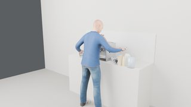
20.8 s · move the portafilter → on the counter
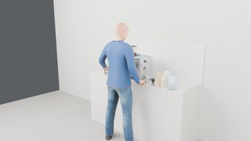
26.0 s · move the portafilter → under the hot water outlet30.0 s · turn steam dial33.5 s · wait · fx hot water, display37.4 s · turn steam dial
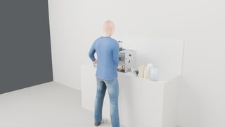
42.4 s · move the portafilter → on the counter
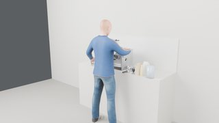
46.4 s · turn steam dial49.5 s · wait · fx steam, display52.8 s · turn steam dial59.2 s · use_tool the cloth67.3 s · open the drip tray75.1 s · close the drip tray
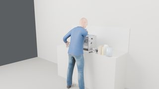
83.4 s · pour the knock box
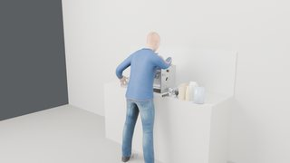
92.5 s · open the water tank
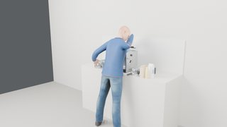
109.6 s · pour the water pitcher
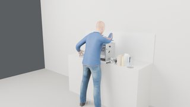
132.0 s · close the water tank
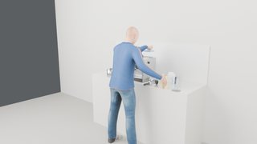
138.6 s · use_tool the cloth
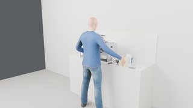
144.1 s · press POWER
Movable parts
Device shown open. Numbered markers sit on the coloured parts; the table gives joint type, travel and the mechanism label used in the runs.